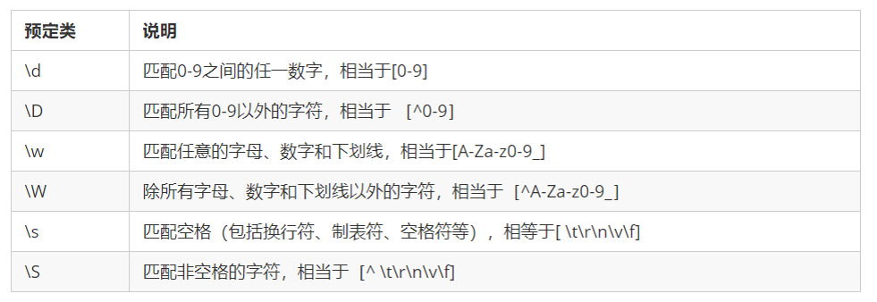

1.正则表达式概述
1.1 什么是正则表达式
正则表达式（ Regular Expression ）是用于匹配字符串中字符组合的模式。在JavaScript中，正则表达式也是对象。
正则表通常被用来检索、替换那些符合某个模式（规则）的文本。例如：
- 验证表单：用户名表单只能输入英文字母、数字或者下划线， 昵称输入框中可以输入中文(匹配)。
- 正则表达式还常用于过滤掉页面内容中的一些敏感词(替换)
- 从字符串中获取我们想要的特定部分(提取)等
其他语言也会使用正则表达式，本阶段我们主要是利用JavaScript 正则表达式完成表单验证。
1.2 特点
- 灵活性、逻辑性和功能性非常的强。
- 可以迅速地用极简单的方式达到字符串的复杂控制。
- 对于刚接触的人来说，比较晦涩难懂。比如：
^\w+([-+.]\w+)*@\w+([-.]\w+)*\.\w+([-.]\w+)*$ - 实际开发,一般都是直接复制写好的正则表达式. 但是要求会使用正则表达式并且根据实际情况修改正则表达式. 比如用户名: ` /^[a-z0-9_-]{3,16}$/`
2.正则表达式在js中的使用
2.1 正则表达式的创建
在 JavaScript 中，可以通过两种方式创建一个正则表达式。
方式一：通过调用RegExp对象的构造函数创建
1
2
var regexp = new RegExp(/123/);
console.log(regexp);
方式二：利用字面量创建 正则表达式
1
var rg = /123/;
2.2 测试正则表达式
test() 正则对象方法，用于检测字符串是否符合该规则，该对象会返回 true 或 false，其参数是测试字符串。
1
2
3
var rg = /123/;
console.log(rg.test(123));//匹配字符中是否出现123 出现结果为true
console.log(rg.test('abc'));//匹配字符中是否出现123 未出现结果为false
2.3 模式修饰符
| 模式符 | 说明 |
|---|---|
| g | 用于在目标字符串中实现全局匹配 |
| i | 忽略大小写 |
| m | 实现多行匹配 |
| u | 以Unicode编码执行正则表达式 |
| y | 粘性匹配，仅仅匹配目标字符串中此正则表达式的lastIndex属性指示的索引 |
2.4 边界符
正则表达式中的边界符（位置符）用来提示字符所处的位置，主要有两个字符
| 边界符 | 说明 |
|---|---|
| ^ | 表示匹配行首的文本（以谁开始） |
| $ | 表示匹配行尾的文本（以谁结束） |
如果 ^和 $ 在一起，表示必须是精确匹配。
2.5 量词符
量词符用来设定某个模式出现的次数。
| 量词 | 说明 |
|---|---|
| * | 重复0次或更多次 |
| + | 重复1次或更多次 |
| ? | 重复0次或1次 |
| {n} | 重复n次 |
| {n,} | 重复n次或更多次 |
| {n,m} | 重复n到m次 |
2.6 括号
| 括号 | 说明 |
|---|---|
| 大括号 | 量词符. 里面表示重复次数 |
| 中括号 | 字符集合匹配方括号中的任意字符 |
| 小括号 | 表示优先级 |
2.7 案例：用户表单验证

案例:验证座机号码
功能需求:
- 如果用户名输入合法, 则后面提示信息为: 用户名合法,并且颜色为绿色
- 如果用户名输入不合法, 则后面提示信息为: 用户名不符合规范, 并且颜色为红色


分析:
- 用户名只能为英文字母、数字、下划线或者短横线组成，并且用户名长度为
6~16位 - 首先准备好这种正则表达式模式
/$[a-zA-Z0-9-_]{6,16}^/ - 当表单失去焦点就开始验证
- 如果符合正则规范, 则让后面的span标签添加 right类
- 如果不符合正则规范, 则让后面的span标签添加 wrong类
1
2
3
4
5
6
7
8
9
10
11
12
13
14
15
16
17
18
<input type="text" class="uname"> <span>请输入用户名</span>
<script>
// 量词是设定某个模式出现的次数
var reg = /^[a-zA-Z0-9_-]{6,16}$/; // 这个模式用户只能输入英文字母 数字 下划线 中划线
var uname = document.querySelector('.uname');
var span = document.querySelector('span');
uname.onblur = function() {
if (reg.test(this.value)) {
console.log('正确的');
span.className = 'right';
span.innerHTML = '用户名格式输入正确';
} else {
console.log('错误的');
span.className = 'wrong';
span.innerHTML = '用户名格式输入不正确';
}
}
</script>
2.8 案例：正则替换
replace() 方法可以实现替换字符串操作，用来替换的参数可以是一个字符串或是一个正则表达式。
1
2
3
4
5
6
7
8
9
10
11
12
13
14
15
16
17
18
19
20
var str = 'andy和red';
var newStr = str.replace('andy', 'baby');
console.log(newStr) //baby和red
//等同于 此处的andy可以写在正则表达式内
var newStr2 = str.replace(/andy/, 'baby');
console.log(newStr2) //baby和red
//替换一个
var str = 'abcabc'
var nStr = str.replace(/a/,'哈哈')
console.log(nStr) //哈哈bcabc
//全部替换g
var nStr = str.replace(/a/g,'哈哈')
console.log(nStr) //哈哈bc哈哈bc
//忽略大小写i
var str = 'aAbcAba';
var newStr = str.replace(/a/gi,'哈哈')//"哈哈哈哈bc哈哈b哈哈"
2.9 案例：过滤敏感词汇
1
2
3
4
5
6
7
8
9
10
11
12
<textarea name="" id="message"></textarea> <button>提交</button>
<div></div>
<script>
var text = document.querySelector('textarea');
var btn = document.querySelector('button');
var div = document.querySelector('div');
// /g 为global，全局替换
btn.onclick = function() {
div.innerHTML = text.value.replace(/激情|gay/g, '**');
}
</script>
2.10 案例：表单验证案例
1
2
3
4
5
6
7
8
9
10
11
12
//手机号验证:/^1[3|4|5|7|8][0-9]{9}$/;
//验证通过与不通过更换元素的类名与元素中的内容
var res = /^1[3|4|5|7|8][0-9]{9}$/;
if (reg.test(this.value)) {
// console.log('正确的');
this.nextElementSibling.className = 'success';
this.nextElementSibling.innerHTML = '<i class="success_icon"></i> 恭喜您输入正确';
} else {
// console.log('不正确');
this.nextElementSibling.className = 'error';
this.nextElementSibling.innerHTML = '<i class="error_icon"></i>格式不正确,请从新输入 ';
}
1
2
3
4
5
6
7
8
9
10
11
12
13
14
15
16
17
//QQ号验证: /^[1-9]\d{4,}$/;
//昵称验证:/^[\u4e00-\u9fa5]{2,8}$/
//验证通过与不通过更换元素的类名与元素中的内容 ,将上一步的匹配代码进行封装,多次调用即可
var res = /^[1-9]\d{4,}$/;
function regexp(ele, reg) {
ele.onblur = function() {
if (reg.test(this.value)) {
// console.log('正确的');
this.nextElementSibling.className = 'success';
this.nextElementSibling.innerHTML = '<i class="success_icon"></i> 恭喜您输入正确';
} else {
// console.log('不正确');
this.nextElementSibling.className = 'error';
this.nextElementSibling.innerHTML = '<i class="error_icon"></i> 格式不正确,请从新输入 ';
}
}
};
1
2
//密码验证:/^[a-zA-Z0-9_-]{6,16}$/
//再次输入密码只需匹配与上次输入的密码值 是否一致